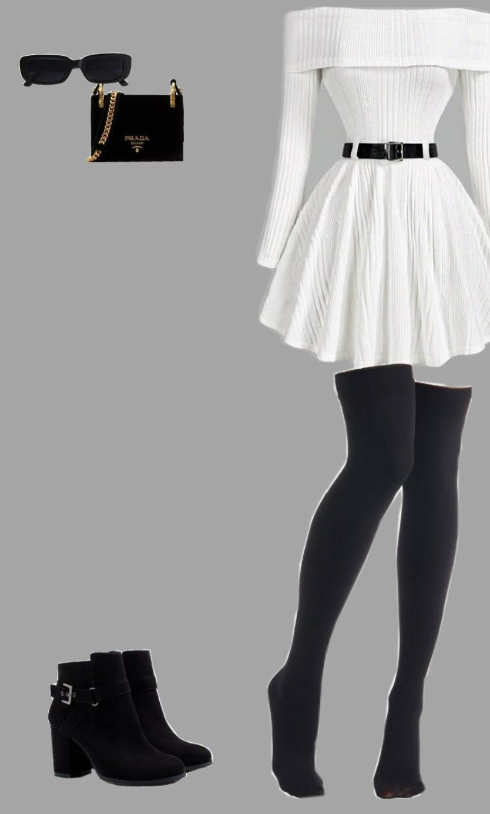
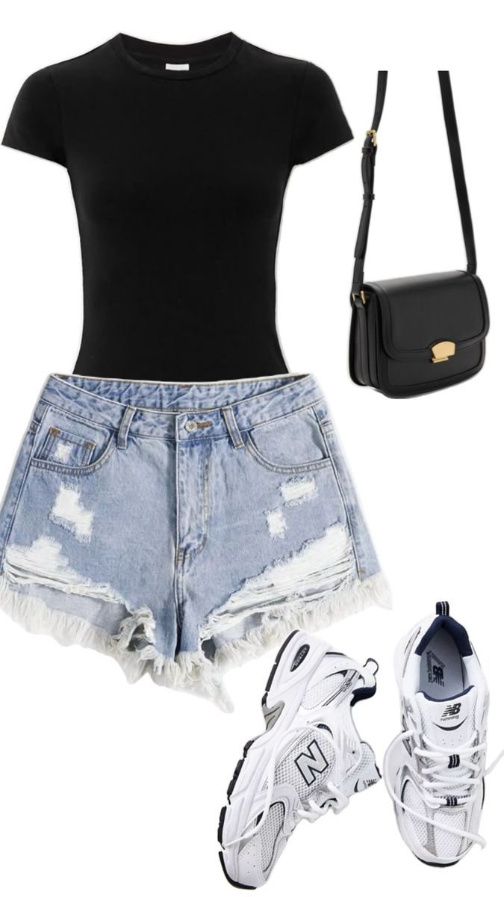
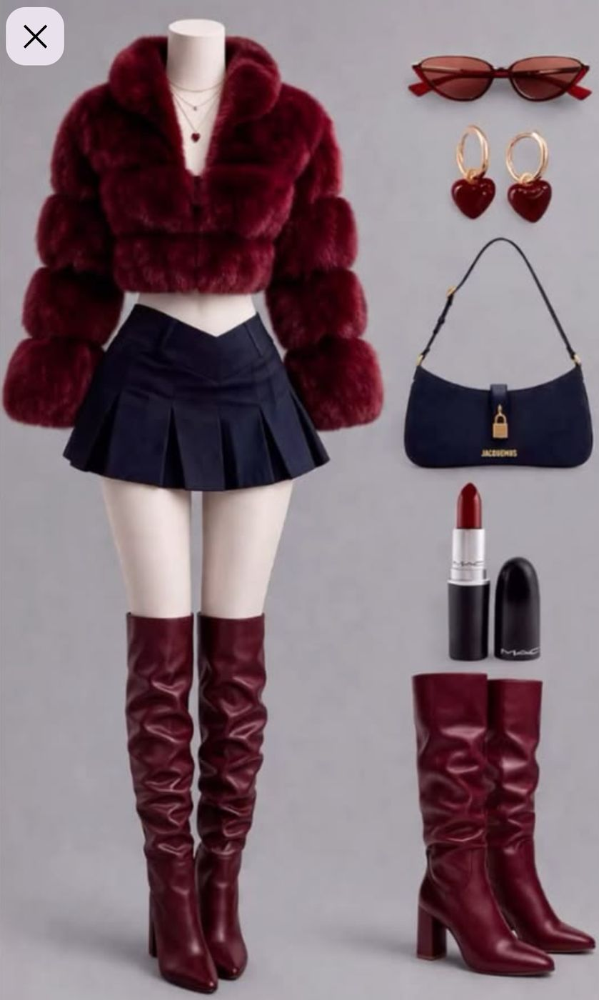

Intent
Hold the character steady while the world changes.
The study tests whether one face and a defined outfit can remain recognizable across close-ups, full-body compositions, front and rear views, varied poses, and changing light.
Reference system
One character input. Three visual systems.
A shared face reference anchors the identity. Each outfit reference then establishes a distinct material, silhouette, and color language for its own series.



White ribbed dress
Identity across space and viewpoint.
Neutral styling moves through warm interiors, clinical spaces, seated compositions, close-ups, and rear views while preserving the same character.
Black denim
Sharper styling under warmer light.
The darker outfit tests facial identity through close framing, side profiles, seated compositions, gesture, and full-body editorial direction.
Burgundy outfit
Color continuity through cinematic interiors.
The final series carries the burgundy palette through conservatory, library, bedroom, bamboo, hotel, and marble settings.
Capabilities demonstrated
Consistency is a system, not a single lucky frame.
The finished set demonstrates controlled identity, outfit continuity, composition across scales, lighting adaptation, and disciplined final curation.
- 01Identity controlMaintain recognizable facial structure across angles, distances, and environments.
- 02Styling continuityCarry materials, accessories, colors, and silhouettes through each outfit series.
- 03Composition rangeMove between close-up, seated, full-body, profile, and rear-view images.
- 04Visual curationSelect a coherent set that reads as one editorial body of work.